Introdução a Redes Neurais
Universidade Tecnológica Federal do Paraná, Cornélio Procópio (UTFPR-CP)
April 8, 2026
Panorama das atividades:
Implementação em Python com PyTorch.
A ideia de rede neural não é algo novo, foi apresentada em 1943 no trabalho de McCulloch e Pitts (modelo computacional de um neurônio). Mas por que somente recentemente elas ganharam força? Além disso, o que é uma rede neural?
Diversas definições já foram propostas:
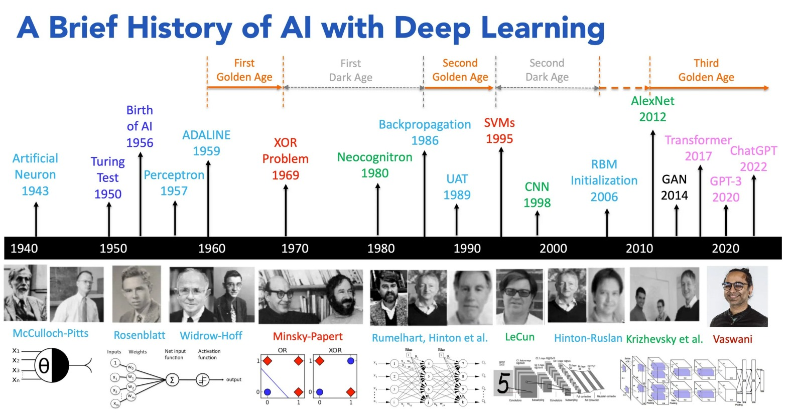
Quase qualquer problema hoje pode ser resolvido utilizando redes neurais, isso não significa que seja prático ou mesmo a melhor solução. Mas em geral temos problemas envolvendo:
No aprendizado supervisionado nos temos os dados definido por:
\[ \mathcal{D} = \{(x_i,y_i)\}^{N}_{i=1} \]
O objetivo é aprender uma função \(f(x;\theta) \approx y\) na qual \(\theta\) são os parâmetros do modelo
Nesse caso quando treinamos o modelo, estamos resolvendo um problema de otimização. A ideia é minimizar o risco que é dado por:
\[ R(\theta) = \mathbb{E}_{(x,y)\sim P}[\mathcal{L}(y, f(x_i;\theta))] \]
Contudo não temos acesso a verdadeira distribuição, por causa disso o que realmente fazemos é minimizar o risco empírico (ou seja com os nossos dados)
\[ \hat{R}(\theta) = \frac{1}{N}\sum_{i=1}^n \mathcal{L}(y_i, f(x_i;\theta)) \]
A partir do problema existem diversas abordagens para tentar encontrar a solução. Diversos deles vocês já devem ter vistos como:
Perceptron foi originalmente proposto como uma abstração matemática de um neurônio biológico.
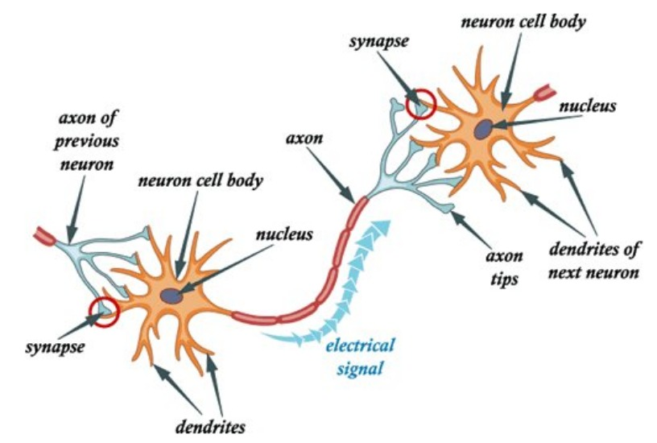
Perceptron foi criado como um classificador binário para resolver o problema do aprendizado supervisionado. Dado um vetor de vetor de entrada \(x\), o modelo define uma função discriminante linear:
\[ g(x) = w^Tx + b \]
Em que \(w\) é o vetor de pesos e \(b\) bias. A regra de decisão induz um classificador binário:
\[ \hat{y} = sign(w^Tx + b), \qquad \hat{y} \in \{-1, +1\} \]
O conjunto de pontos que satisfaz:
\[ w^Tx + b = 0 \]
define um hiperplano de decisão em \(\mathbb{R}^d\), particiona o espaço em dois semi-espaços:
Nesse caso o vetor peso \(w\) é normal ao hiperplano e controla a sua orientação, enquanto \(b\) desloca a sua posição.
Em um problema em que temos duas classes linearmaente separaveis com apenas 2 features, ou seja \(x \in \mathbb{R}^2\), o hiperplano se reduz a uma reta \(w_1x_1 + w_2x_2 + b = 0\).
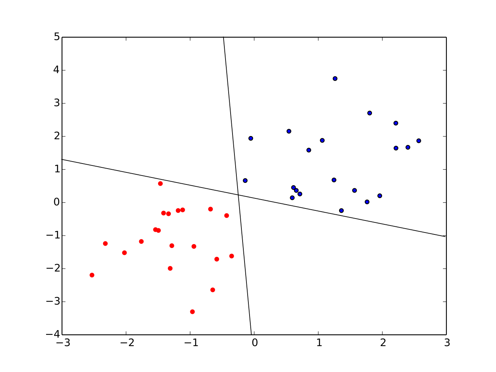
O Perceptron pode ser visto como um algoritmo que busca (w,b) tal que:
\[ y_i(w^Tx_i + b) > 0, \forall i \]
Quando isso não ocrre atualiza de forma iterativa para encontrar o melhor peso:
\[ w \leftarrow w + \eta y_i x_i \]
\[ b \leftarrow b + \eta y_i \]
O Perceptron pode ser interpretado como uma unidade computacional composta por:
No perceptron clássico o \(\phi(z) = sign(z)\), que foi substituido por funções de ativação mais modernas como ReLU, sigmoid, tanh, entre outros que veremos mais para frente.
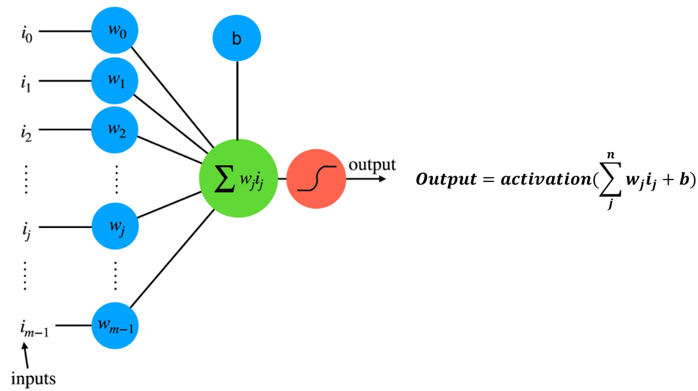
Primeiro antes de implementar um perceptron do zero em python. Vamos mostrar passo a passo como os pesos são atualizados. Para isso vamos usar o problema “OR”, nesse caso temos os dados:
Com isso todos os valores estão corretos, logo os parâmetros que ajustam esse problema são \(w [1, 1]\) e \(b = -1\).
Um único perceptron tem capacidade de resolver apenas problemas linearmente separáveis. Minsky & Papert provaram (Perceptrons, 1969) que existem restrições sobre o que as redes Perceptron são capazes de representar utilizando o problema clássico XOR:
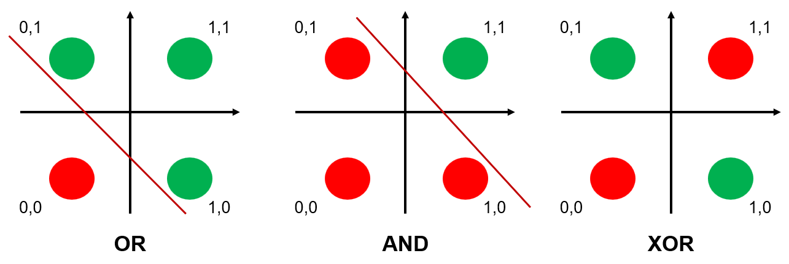
Com a evolução das pesquisas em redes neurais e, principalmente, o avanço da tecnologia, essas limitações foram superadas através dos seguintes fatores:
As redes neurais podem ser vistas como composições de funções que permitem modelar não linearidades complexas.
\[ f(x) = f_L \circ f_{L-1} \circ \dots \circ f_1(x) \]
Vimos até agora uma dessas funções que podmeos utilizar:
\[ f_i(x) = \phi(w^T*x + b) \]
E como podemos observar podemos repetir essa mesma estrutura várias vezes. Essas estruturas nós podemos chamar de camadas, ou seja, redes neurais são uma composição de múltiplas camadas.
Nos próximos slides vamos entender como funciona a estrutura de um modelo de rede neural, isso será feito através do entendimento de como é feito o pipeline do treinamento delas, que consiste nas seguintes etapas:
Esse é o loop que define o aprendizado das redes neurais
Esse loop de aprendizado pode ser visto na figura abaixo:
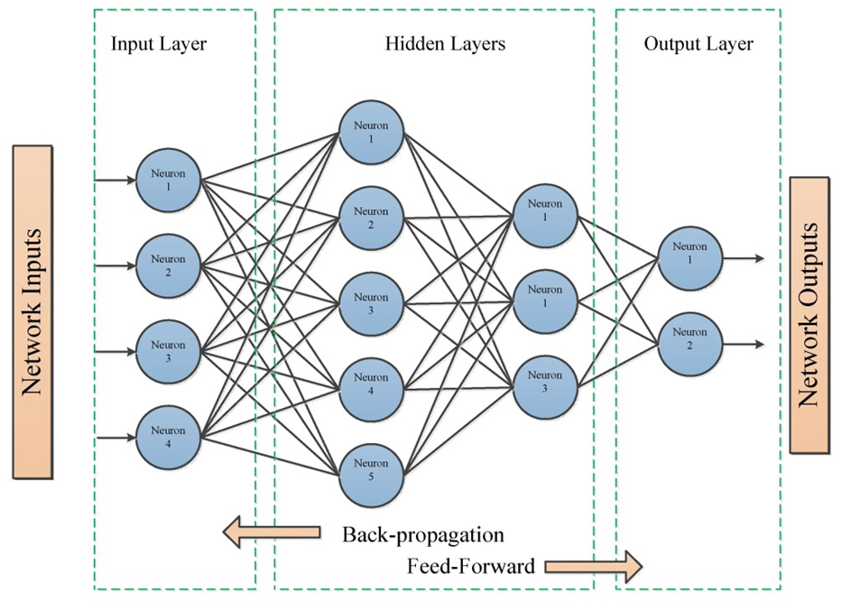
O foward pass nada mais é do que o cálculo da saída ou seja \(\hat{y} = f(x;\theta)\).
A função de perda é uma parte essencial de qualquer modelo de rede neural, ela define uma forma de calcular a diferença entre a previsão do modelo e o valor que se desejaria obter. Podemos escrever isso como:
\[ \mathcal{L}(y, \hat{y}) \]
Dependendo do seu problema você irá utilizar diferentes funções de perda (em alguns casos até que criar um), vamos ver os 3 principais que usamos em quase todos os casos:
Artigo interessante: https://arxiv.org/pdf/2307.02694
MSE normalmente é usado em casos de regressão, ou seja, em casos que desejamos prever um valor contínuo.
\[ \frac{1}{N} \sum (y - \hat{y})^2 \]
Essa função de perda é utilizada para os casos de classificação binária (relacionado com a entropia de Shannon)
\[ \mathcal{L} = -[y \log(\hat{y}) + (1-y)\log(1-\hat{y})] \]
É a generalização da Binary Cross-Entropy, nesse caso é utilizado quando queremos fazer uma classificação com várias classes (além de apenas 2)
\[ \mathcal{L} = -\sum_i y_i \log(\hat{y}_i) \]
Relembrando nosso objeto que era minimizar o risco empirico, para realizar isso na rede neural utilizamos o algoritmo backpropagation que calcula algo chamado de “gradiente ()” da função de custo. Basicamente o que ele faz é calcular a derivada parcial da função de perda em relação a cada peso, propagando o erro da última camada até a primeira (“trás para frente”) uitlizando a regra da cadeia.
\[ \mathcal{L}(f(x), y) \rightarrow \frac{\partial \mathcal{L}(f(x), y)}{w_i} \]
\[ \frac{\partial y}{\partial x} = \frac{\partial y}{\partial u} \frac{\partial u}{\partial x} \]
A derivada geometricamente representa a inclinação da reta tangente ao gráfico de uma função. Fermat percebeu que era possível encontrar os máximos e mínimos de uma função a partir de suas derivadas.
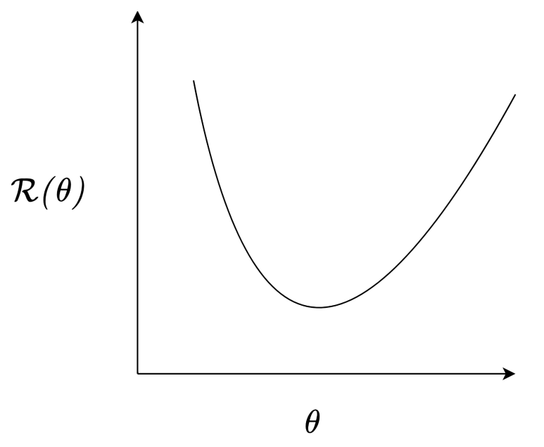
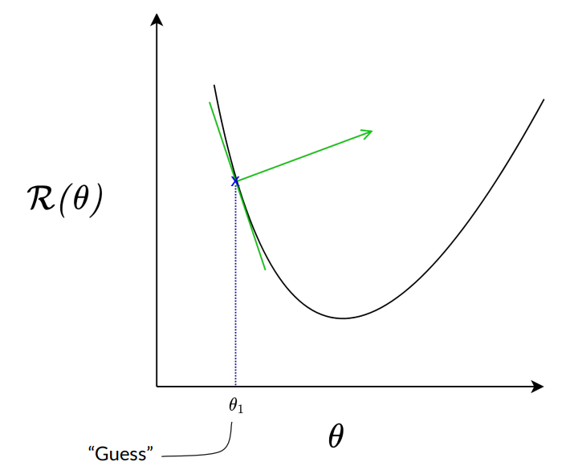
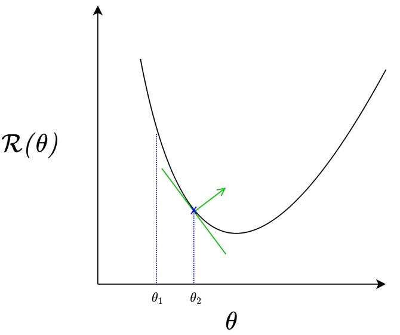
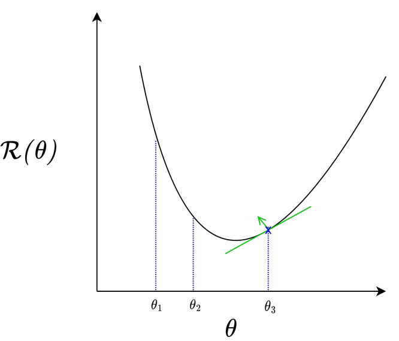
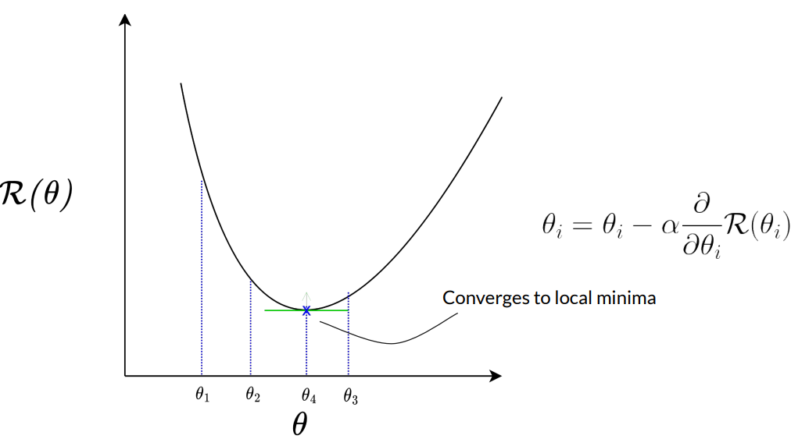
Esse algoritmo que acabamos de ver é um otimizador conhecido como Gradient Descent, com isso os pesos do nosso modelo de rede neural podem ser atualizados simplesmente com:
\[ \theta_{t+1} = \theta_t - \eta \nabla_\theta \mathcal{L} \]
Não se preocupe, na prática você não precisa calcular as derivadas, as bibliotecas como pytorch calculam o gradiente de forma automatica. Contudo, entender esse processo é fundamental.
Vamos fazer esse processo de atualizar os parâmetros em um caso simples (sem regra da cadeia), imagine que queremos encontrar o mínimo da função \(f(x, y) = x^2 + y^2\), e temos 2 valores iniciais aleatórios \(x=4\) e \(y=2\). O gradiente vai ser dado por $f(x, y) = (, ) = (2x, 2y)
Se verificarmos o valor da função veremos que estamos diminuindo
\[ f(4,2) = 16 + 4 = 20 \qquad f(3.2, 1.6) = 10.24 + 2.56 = 12.8 \]
Novamente vemos que estamos cada vez mais perto de \((0,0)\) que é o mínimo da função, continuando isso chegaremos ao mínimo da função.
Os principais elementos que definem uma rede neural são:
Até agora já vimos quais são as funções de perda, uma das camadas mais utilizadas que é a camada de perceptrons e também vimos algumas funções de ativação (sign e tanh). Nos próximos slides veremos algumas outras camadas, um apanhado geral das funções de ativação e entender o otimizador moderno ADAM.
As funções de ativação possuem um papel central nas redes neurais, são elas que introduzem na rede a não linearidade que é o elemento necessário para se aprender padrões complexos. Atualmente existem uma série de funções de ativação cada uma com suas particularidades, vantagens e desvantagens. Entre elas estão:
Relu é basicamente a função de ativação mais utiliza em redes neurais, ganhou muita popularidade por sua extrema eficiência.
\[ ReLU(x) = max(0, x) \]
Artigos interessantes: https://arxiv.org/pdf/1903.06733, https://arxiv.org/abs/2505.22074
Leaky ReLU foi feito para tentar superar o problema dos neurônios mortos da ReLu, isso é feito adicionado um declibe na função aos valores negativos utilizando uma variável de controle
\[ Leaky Relu(x) = max(\alpha*x, x) \]
Antigamente a Sigmoid era a principal função de ativação, utilizada em toda a rede neural, contudo ela apresenta diversos problemas, dentre eles o maior é o Vanishing Gradient Problem que é causado pela saturação dos valores positivos e negativos.
\[ \sigma(x) = \frac{1}{1 + e^{-x}} \]
Basicamente a sigmoid não é mais utilizada nas camadas intermediarias das redes, contudo ela ainda tem uma grande utilidade. Para classificação binária ela se torna muito interessante, isso porque como sua saída varia de 0 a 1, temos que ela transforma o valor de saída da rede em uma probabilidade.
Tem a mesma ideia da Sigmoid, ou seja, de transformar a saída em uma probabilidade, mas nesse caso para classificação multiclasse.
\[ Softmax(x_i) = \frac{e^{x_i}}{\sum_{j}e^{x_j}} \]
Exemplo: Queremos classificar uma imagem entre cachorro, gato, coelho. Imagine que a saída do modelo resulta em 1.75 para cachorro, 3.90 para gato e 4.35 para coelho. Utilizando a fórmula acima, a saída do modelo será: 0.04 para cachorro, 0.37 gato e 0.59 para coelho.
Funções mais modernas como a GELU tem uma maior capacidade de aprender padrões mais complexos, normalmente em troca de uma complexidade maior. A GELU além de ser uma função suave (tem derivada em todos os pontos) é o estado da arte para modelos baseados em transformers.
\[ GELU(x) = x * \Phi(x) \approx 0.5*x(1 + Tanh(\sqrt{\frac{2}{\pi}}*(x + 0.044715*x^3))) \]
Adaptive piecewise approximated activation linear unit (APALU), é uma função em que a rede aprende os parâmetros para a função de ativação (paramétrica), totalmente adaptavel e maleavel. Fazendo com que ela funcione bem para dados complexos.
\[ APALU(x) = \begin{cases} a(x + x(\frac{1}{1 + e^{-1.702(x)}})), & x \geq 0 \\ b(e^x - 1), & x < 0\end{cases} \]
Growing Cosinet Unit (GCU) foi um das primeiras funções de ativação a trazer funções de ativação oscilatórias, a grande novidade foi que com a GCU é possível resolver o problema XOR com um único neurônio. Contudo suas propriedades e utilização prática foram pouco exploradas.
\[ GCU(x) = x*cos(x) \]
Um modelo é basicamente feito por várias camadas, cada uma tendo uma função específica no modelo. As que vamos ver/vimos hoje são:
O que ele faz é desativar perceptrons aleatoriamente durante o treinamento, isso ajuda a reduzir o overfitting do modelo. *Obs: No teste essa camada é desativada e todos os perceptrons são utilizados
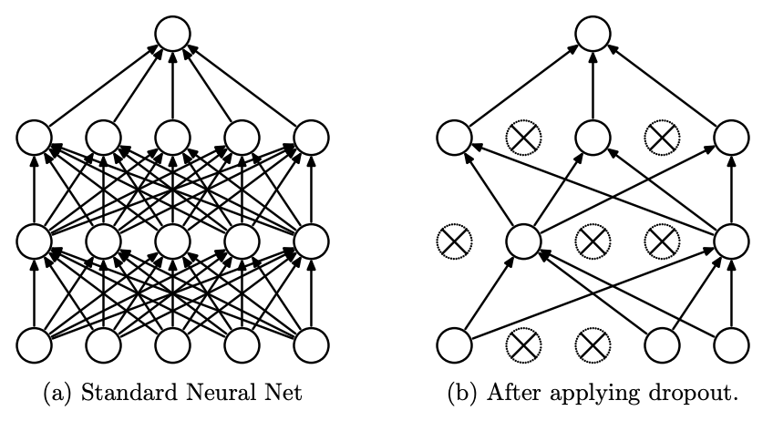
Principal função dessa camada é estabilizar o treinamento das redes neurais. O que ele faz é normalizar os dados para ter media 0 e variância 1.
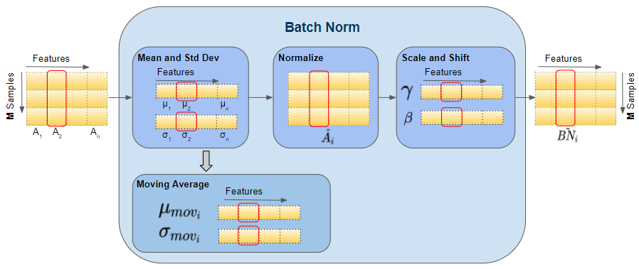
Quando não há normalização, algumas variáveis podem ter escalas muito diferentes, o que leva a gradientes desbalanceados. Com isso, uma variável pode ter magnitude muito maior no gradiente, enquanto outra tem magnitude muito pequena. Esse desbalanceamento pode prejudicar o desempenho dos algoritmos de otimização.
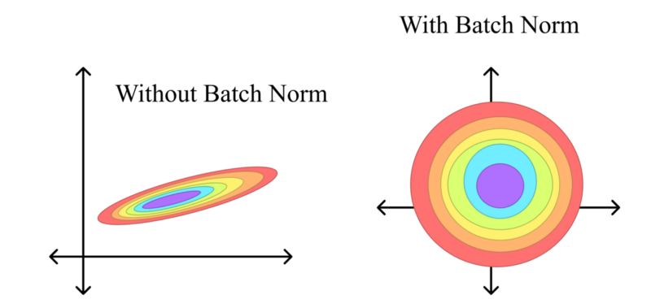
Existem diferentes estratégias de normalização:
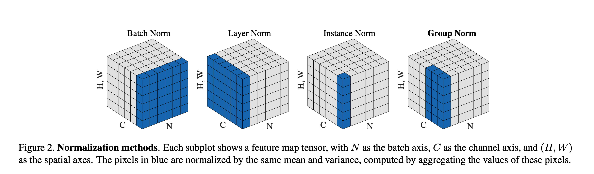
Mesmo que o SGD tenha bons resultados, na prática hoje em dia utilizamos princiaplemnte otimizadores mais modernos, quase todos variantes do ADAM. Primeiro temos que entender quais são os principais problemas do SGD:
O ADAM utiliza um princípio da físico chamado de Momentum. Em vez de atualizar os parâmetros de forma lenta e direta, o Momentum “acelera” a otimização, levando em consideração a direção passada dos gradientes, o que ajuda a acelerar a convergência.
No ADAM, existem dois parâmetros principais chamados \(\beta_1\) e \(\beta_2\) que controlam o cálculo dos momentos.
As atualizações dos parâmetros seguem a fórmula:
\[ m_t = \beta_1 \cdot m_{t-1} + (1 - \beta_1) \cdot g_t \]
\[ v_t = \beta_2 \cdot v_{t-1} + (1 - \beta_2) \cdot g_t^2 \]
Onde: \(m_t\) é o momento de primeira ordem, \(v_t\) é o momento de segunda ordem e \(g_t\) é o gradiente no tempo \(t\).
Além disso, o ADAM aplica uma correção para compensar as estimativas iniciais de \(m_t\) e \(v_t\):
\[ \hat{m}_t = \frac{m_t}{1 - \beta_1^t}, \quad \hat{v}_t = \frac{v_t}{1 - \beta_2^t} \]
Os parâmetros são atualizados da seguinte forma:
\[ \theta_t = \theta_{t-1} - \frac{\eta}{\sqrt{\hat{v}_t} + \epsilon} \cdot \hat{m}_t \]
Uma das variações mais populares do ADAM é o ADAMW. Ele implementa um weight decay, que aplica uma regularização no modelo. A fórmula da atualização dos parâmetros é modificada para:
\[ \theta_t = \theta_{t-1} - \frac{\eta}{\sqrt{\hat{v}_t} + \epsilon} \cdot \hat{m}_t + \eta \lambda\theta_{t-1} \]
O parâmetro \(\lambda\) controla o fator de decaimento de peso. Ajuda a evitar overfitting e garante maior estabilidade ao modelo.
Curso Redes Neurais - Introdução | Lucas Otávio